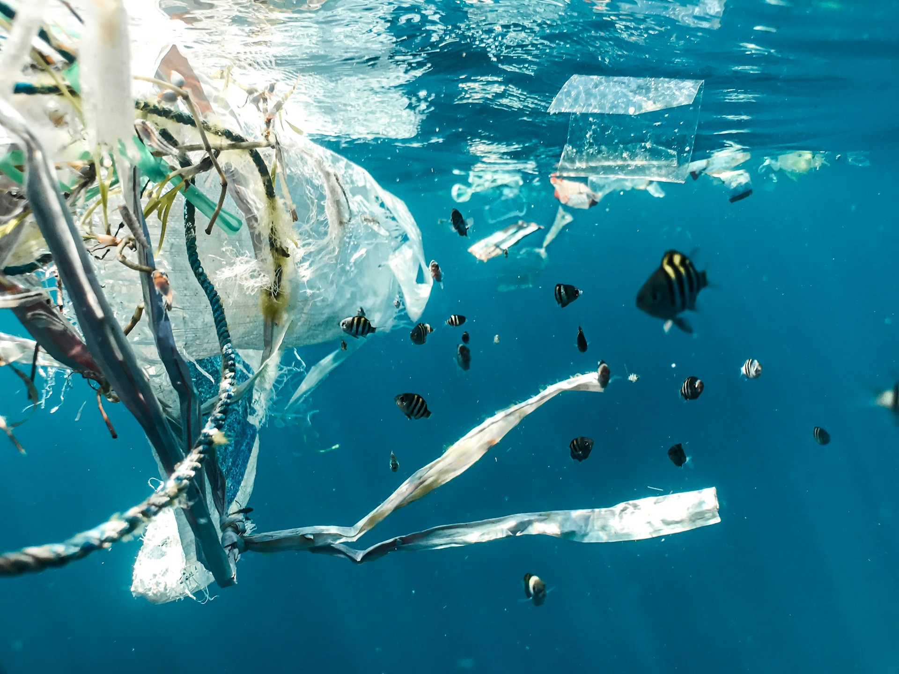
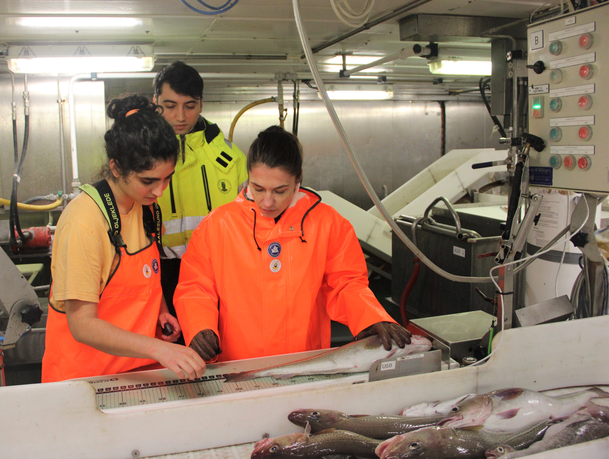
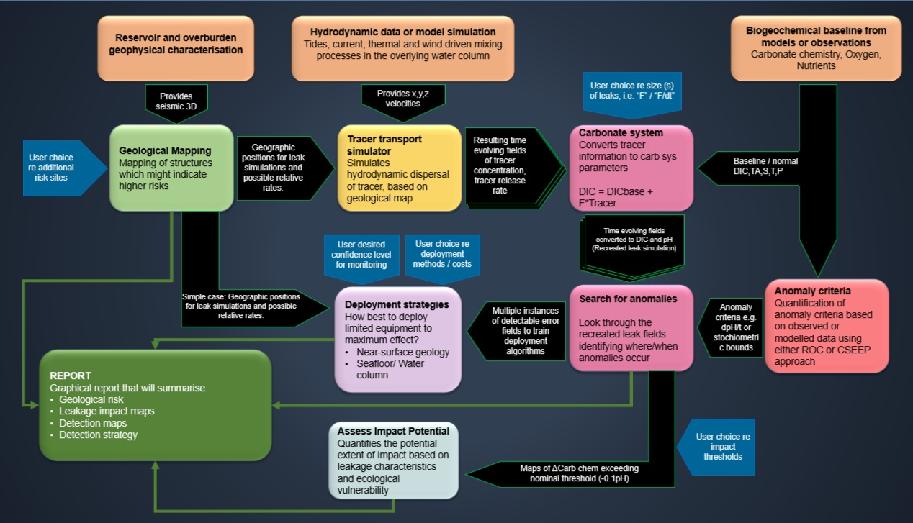
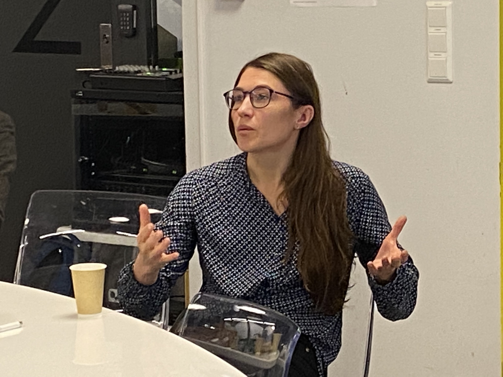

Research
My research interests include mathematical modelling, optimization, numerical analysis, and data-driven methods, with applications in marine monitoring and environmental systems. Below is a selection of research topics and projects I have worked on.
For a full list of publications, please see my Google Scholar profile.
Plastic Pollution and Lagrangian Transport
Plastic pollution is widespread in the marine environment, but its distribution is still not well understood. Microplastics differ in size, shape, and buoyancy: some float, some sink, and many change behavior over time. They are transported by ocean currents, turbulent mixing, and wave-induced drift, and can accumulate in sediments, coastal zones, or remote regions.
Lagrangian particle tracking models are used to study transport pathways and identify potential accumulation zones. Numerical simulations help reveal large-scale patterns that are difficult to observe directly, and make it possible to explore how different processes interact and affect uncertainty in predictions.
This work is part of the North Atlantic Microplastic Centre (NAMC) and aims to improve understanding of transport pathways and accumulation in Norwegian waters.

Machine Learning for Fisheries Acoustics
Acoustic surveys are widely used to study fish stocks and marine ecosystems, but the interpretation of acoustic data remains challenging. The signals reflect a mixture of fish, plankton, seabed, and noise, and separating these components is not straightforward. The datasets are large and complex, and much of the analysis is still performed manually.
Machine learning methods can support this process by identifying patterns in acoustic backscatter data and automating parts of the analysis. These approaches aim to improve target classification and to better integrate data into workflows used for biomass estimation and ecosystem monitoring.
The focus of this research project was on data-driven methods for analysing multifrequency acoustic data. This includes self-supervised learning approaches that extract structure from largely unlabelled data, as well as methods that handle strong class imbalance, where fish observations represent only a small fraction of the data.
This work is part of the CRIMAC collaboration at the Institute of Marine Research and contributes to ongoing efforts to improve the use of acoustic data in fisheries science through more robust and scalable analysis methods.

Marine Monitoring for Offshore CCS
Offshore carbon capture and storage (CCS) is a key technology for mitigating anthropogenic CO₂ emissions. Norway has been a global frontrunner in CCS, storing CO₂ in the Sleipner field since 1996 and advancing large-scale deployment through initiatives such as the Longship project. The Norwegian continental shelf has substantial storage potential, making robust and well-designed monitoring strategies an essential component of safe and effective CO₂ storage.
With further upscaling of offshore CO₂ storage, efficient monitoring strategies are increasingly important. Optimisation methods can support effective sensor placement, while statistical and process-based models help distinguish potential leakage signals from natural background variability. The overall aim is to enable reliable detection while keeping monitoring efforts and costs at a manageable level.
This research is linked to STEMM‑CCS project, that conducted the first controlled offshore CO₂ release test experiment , providing a unique opportunity to test and validate monitoring technologies under realistic conditions. It is also closely connected ACTOM project and, in particular, the ACTOM toolbox, where these methods are used to support practical monitoring design and decision-making.

Portfolio Optimization
Portfolio optimization is concerned with how to distribute investments across different assets in order to balance return and risk. It plays a central role in finance, both in theory and in practice, and is widely used for constructing investment strategies under uncertainty. The risk is typically described through correlations between asset returns, which are estimated from data.
In practice, these estimates can be unreliable, especially when the number of assets is large compared to the amount of available data. In such cases, the information in the data is not sufficient to distinguish between different assets, and many different portfolios can appear equally optimal.
This work is a collaboration with Örebro University and focuses on understanding this situation. The aim is to describe the full set of possible solutions and to introduce criteria that select stable and interpretable portfolios, such as minimum-norm solutions.
